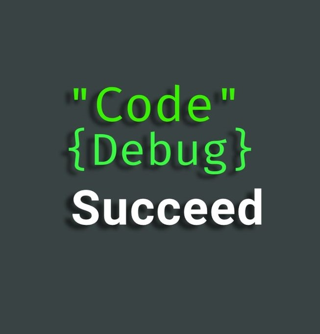

Articles
Balancing Fitness with College Life: My Approach to Staying Fit
As a college student, managing time between studies, social life, and personal interests can feel overwhelming, especially when trying to maintain fitness. Despite the chaos of assignments, group projects, and exams, I’ve learned that staying fit doesn’t require spending hours in the gym. With a focused approach and efficient techniques, it’s possible to see results, stay energized, and still get enough rest for the next day.
The Challenge: Time vs. Fitness
For most students, the biggest obstacle is time. Between classes and late-night study sessions, carving out an hour or two for fitness feels impossible. But the truth is, fitness doesn’t have to be about long, drawn-out gym sessions. It’s more about consistency and making the most of the time you have.
My Routine: Short, Effective Workouts
I’ve found that working out after school is the best time for me. By then, the demands of the day are mostly over, and I can dedicate 30-45 minutes to my fitness goals without distractions. My focus is on short but challenging sessions, ensuring I target specific muscle groups without overdoing it.
- Choose Compound Movements: Exercises like squats, deadlifts, push-ups, and rows work multiple muscles at once, making them efficient for time-crunched workouts.
- Prioritize Weight Over Reps: I focus on using weights that challenge me. For each exercise, I aim for 3 sets of 8-12 reps.
- Keep Rest Periods Short: I rest for about 60-90 seconds between sets.
- Target Specific Muscles Each Day: Split workouts into upper body, lower body, and core days to allow muscle recovery.
The Importance of Rest
Recovery is just as important as the workout itself. I make sure to get at least 7-8 hours of sleep each night to allow my body to repair and grow stronger. Additionally, I don’t push myself to the point of exhaustion during workouts.
Consistency Over Perfection
The key to balancing fitness with school life is consistency. Even if I can only spare 20 minutes, I stick to my routine because every effort counts. Over time, these small, regular sessions build up to significant progress.
A Glimpse into the World of Cinematography: Where Art Meets Science
Cinematography is more than just capturing moments on film—it's the language through which stories are told visually. From the interplay of light and shadow to the meticulous framing of a single shot, every element contributes to how we perceive and feel a story. The more I delve into this world, the more I’m awed by the incredible expertise and artistry of legendary filmmakers like Christopher Nolan and Martin Scorsese.
The Visionaries Who Inspire Me
Take Christopher Nolan, for example—his work is a masterclass in blending narrative depth with visual innovation. Whether it’s the non-linear storytelling in Memento or the jaw-dropping practical effects in Inception, his ability to use visuals as a storytelling tool leaves me speechless. Martin Scorsese, on the other hand, paints emotional and raw portraits of human life with an unparalleled attention to detail. Watching The Irishman or Goodfellas, I find myself marveling at how every shot seems perfectly crafted to convey a mood or theme.
Cinematography: The Art of Storytelling
The more I watch and study films, the more I realize how cinematography transforms scripts into experiences. The camera’s movement, the choice of lenses, and even the way colors are graded—they all evoke emotions that words alone can’t express. A slow zoom might make us feel the weight of a character’s decision, while a sweeping wide shot can remind us of our insignificance in the grander scheme of things.
Eager to Learn
I’m not a filmmaker myself, but I’m captivated by the behind-the-scenes magic that creates what we see on screen. How do they decide the exact placement of a camera? What inspires a certain lighting choice? These are questions I constantly ask myself while watching movies. I find myself pausing scenes, analyzing the composition, and imagining how the professionals brought them to life.
A Journey of Discovery
For me, every movie is a learning opportunity. I’m slowly starting to recognize the recurring techniques that define a filmmaker’s signature style, like Scorsese’s long tracking shots or Nolan’s fascination with time and space. These elements remind me that cinematography is an intricate dance of creativity and technical skill, one that I’m eager to keep exploring and appreciating with every film I watch.
A Never-Ending Fascination
Cinematography has a way of drawing me in, leaving me inspired and humbled. It’s a world where every frame tells a story, and every film is a treasure chest of lessons waiting to be uncovered. While I might never step behind the camera myself, the awe I feel for this craft keeps me learning and admiring the geniuses who make it all happen.
My Coding Journey: From Fear to Confidence
The Weight of Comparison
When I first started learning to code, the world of programming seemed overwhelming, intimidating even. As a newcomer, I felt like an outsider surrounded by people who already had a deep understanding of complex concepts and were able to solve problems effortlessly. The fear of failure was paralyzing. I questioned whether I belonged in this field at all, wondering if I’d ever be able to catch up to those who seemed light years ahead.
Shifting Mindset: Embracing the Journey
It wasn’t just the technical complexity that scared me; it was the constant comparison. I’d look at my classmates, professors, and even online communities, seeing how easily they navigated through complex algorithms, coding languages, and frameworks. It felt like everyone had it figured out except me. Every mistake I made felt like a setback, and I feared that I might never reach their level of expertise. That self-doubt loomed over me, and the idea of failing kept me from pushing forward.
But gradually, something shifted. I realized that this fear wasn’t unique to me; it was something every beginner faces. Every coder, no matter how skilled, was once where I am now. I started to understand that learning to code wasn’t about being perfect from the start, but about taking small steps, making mistakes, and learning from them.
What really helped me was acknowledging that there was no "end" to the coding journey. There will always be more to learn, new technologies to explore, and challenges to solve. The key was to accept failure as a part of the process rather than something to fear. Instead of comparing my progress to others, I focused on my personal growth, recognizing the improvements I was making, no matter how small they seemed.
Building Confidence Through Consistency
As I began to embrace my beginner status, I started setting manageable goals for myself. I didn’t try to learn everything at once. I focused on mastering the fundamentals—understanding variables, loops, and functions before diving into more complex topics. With each small achievement, my confidence grew. I went from writing simple programs to tackling more difficult challenges, and every time I solved a problem, no matter how small, I felt a sense of accomplishment that kept me motivated.
I also learned to appreciate the process of trial and error. The frustration of running into bugs and not understanding why something wasn’t working is now something I approach with curiosity rather than fear. Every error is a lesson, and debugging has become an essential part of my learning process.
An Open Mindset: Ready for More
Now, I’m not afraid to fail. Instead, I’m eager to learn. I’ve accepted that the learning curve can be steep, but that’s part of the excitement. The more I learn, the more I realize how vast the field of programming is, and that keeps me excited about what lies ahead. I’ve stopped looking at the success of others as something to be intimidated by, but as something to inspire me. Instead of focusing on where I’m falling short, I focus on what I’m gaining and how much I’ve learned since I first started.
The Journey Is Just Beginning
I know I’m just at the start of my coding journey, and there’s still so much to learn. But now, I approach it with an open mind and a growth-oriented attitude. The fear that once held me back has been replaced by curiosity, and I’m excited to keep learning and growing in this field. I know I’m on the right path, and no matter how long it takes, I’m committed to seeing it through.